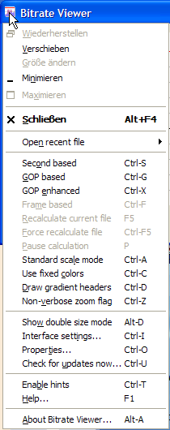
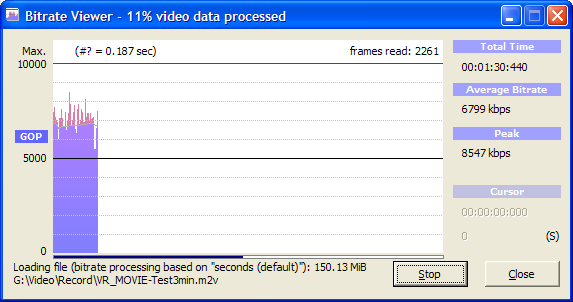

Bitrate Viewer - Documentation
Basics
The bitrate of a video track is measured in bits per second which
is considered as the physical unit. In a metrical system we usually
supply exponential coefficients as prefixes to a value. With bitrate
values are normally growing above the first three ten based exponents,
so we have k for kilo = 1,000 and M for Mega
= 1,000,000 as multiplicands. Even higher values as you can find
in binary transfer speeds are prefixed with G for Giga =
1,000,000,000. We wouldn't have that kind of value for a video
track (not yet ;-) - but you can see one thing here: it is always a
multiplicand based on ten ... not on 2, 8 or 1,024 as for computer
memory devices. The reason for that maybe found in the fundamental
history of data processing. In the very beginning things like a byte
or a kilobyte were not existent while data transfer via serial lines
did exist already. So the unit for bitrates is metrical, not binary.
Remark: In the Bitrate Viewer tool that comes with DVD-Lab PRO
you can switch between metrical and binary display of the bitrate -
here with this tool you can't per author's decision!
Features

- Main Menu:
The menu displayed right hand here is a blown up version of the
dialog's system menu. Click onto the top left corner of the
application's window frame to open it.
- Drag & Drop:
You can drag and drop selected files from Windows Explorer onto a
running Bitrate Viewer's dialog so that the tool stops any currently
analysis processing and tries to open your dropped file as the new
source.
- Double Size Mode:
As of version 2.2 you can toggle/switch the main window's size twice
its standard size. Many have asked for it and thus it allows a more
detailed view within the bitrate grid. In version 2.2 it is still
experimental. You will have the final feature with version 3.0.
- 4 Calculation Algorithms:
You can dynamically choose between the following bitrate calculation
schemes:
- Second based (standard): the bitrate peak and average
values will be iterated after each second of consecutively
reading frames. Use Ctrl-S to activate from any other
setting.
- GOP based: a bitrate peak value is generated after
each GOP (Group of Pictures) processed.
A GOP usually consists of 12 ... 15 frames on PAL systems
and 15 ... 18 frames on NTSC systems. So the measurement
interval is approx. half a second. But files that are using
scene change detection or rudimentary cut-edited can have
shorter GOP's than the standard size specified to the MPEG
encoder. Consider having a GOP with only one I-frame then
you'll get very high bitrate values that increase the
average value and dominate the peak detection. Use
Ctrl-G to activate this from any other setting.
- Enhanced GOP based: This is a similar method as the
GOP based setting. The difference is a weighted
algorithm that counts the frames each GOP has and shifts a
GOP that is less than half the standard GOP size into the
next cycle of calculation. This gives a more harmonized
result than the raw GOP based method. Use
Ctrl-X to activate this from any other setting.
- Single frame based: Since version 2.0 this method
has been added to cover analysis and displaying of each
single frame in a video file. We can't name this a real
bitrate analysis method because no accumulation of bitrate
measurement values is done here. Beside the bitrate average
value which has to be the same of course as in the other
methods the bitrate values displayed are those of each
individual frame. Thus you will see extremely high values
usually for I-frame pictures and quite low values for
B-frame pictures. Use Ctrl-F to activate this method
from any other setting. If the FFMpeg interface delivers
the frame type information the frame type of the currently
pointed frame is shown right hand to the current time
display in the Cursor area. If the frame type is
shown you can click on the frame type indicator to jump
to the next or previous I-frame (see the
commands section for details).
Note: Using the single frame based method has the
largest impact on system memory storage as all information
needed for each frame is cached in core memory!
Note that a video file has to be read again if you switch between
these settings ... unless you reach the same setting again for the
same file because of the ...
- Bitrate Viewer Cache:
Each video file successfully processed will be cached internally,
i.e. the bitrate data only, not the video file itself. So if you
switch between the calculation algorithm settings (s.a.) you get
the next view redisplayed very fast after it has been processed
once.
- Indicator LED:
When you open a file that is big enough to take at least some
seconds to process at all you'll see an indicating blinking LED
in the top left corner of the view window:
-
The file being processed most likely is an elementary video
stream that has GOP timecodes which were used at the beginning
and the end of the file to calculate the frame count based
on a fixed frame rate seen first in the file. This method of
frame count can be unreliable (see below).
-
The file being processed has either PTS/DTS marks that were used
to read out and calculate the frame count based on a fixed frame
rate seen first in the file -or- the current file
is a VOB which contains so called NAV packs (navigational
directives) which were used to calculate the frame count also
based on a fixed frame rate.
-
Neither PTS/DTS nor NAV packs were found in the open file.
Instead the SCR (system clock reference) values were found
in PES packets and alternativly used to calculate the frame
count.
-
In this case the extended interface was not able to find
either of those information markers mentioned. So there
is a frame count prediction based on the file's size which
is indeed not very accurate.
-
New as of version 2.0 this LED indicates a cross check frame
count estimation error in case when the
LED was previously shown while scanning the file, i.e. GOP
timecode only is present in your file. A cross check is done
regularly to see if the estimated frame count matches the
amount of data read compared to its file size. If there is
a mismatch then you obviously have a file that was cut
improperly and therefore has corrupted timecode stamps.
After the file has been processed the LED will either remain steady
for a moment saying that the frame count prediction was fine or it
turns into steady red with an additional text that displays the
deviation in percent and absolute value.
- Timecode status:
The status of the indicator LED mentioned above will be displayed
permanent below the MPEG layer and stream type on the left with an
abbreviated note. You'll see either PTS or NAV for the
LED, GOP for the
LED, SCR for the
LED. Additionally the string full tells you that the full
video frame reader was used which automatically activates
itself for files smaller than 11MB of size (you can deactivate this
feature).
If none of the conditions above do match the text n/a
will be displayed, i.e. when the scondary MPEG interface could not
be used. This will be the case for all files that don't meet MPEG1
or MPEG2 conditions.
- CRC status display:
For MPEG 2 PS and TS a CRC check is performed according to Annex A
of the ISO/IEC MPEG specification during file header analysis. If a
CRC error is detected you will have an additional status display on
the left hand pane. Detection of CRC errors don't have any influence
on the bitrate analysis itself - despite it can be that frame read
errors may occur.
- Program/PID display:
MPEG 2 TS files can have multiple video and audio streams. Normally
the first unscrambled/non-encrypted video stream will be selected by
the interface to analyze. You will see an additional information
display with the TS selected program number and PID. MPEG 4 TS and
M2TS files can have multiple video and audio stream as well but the
integrated interface doesn't make a check on it.
- Marker lines:
Two horizontal lines in the viewer window are predefined and always
visible: A red maximum bitrate marker that normally shows up on
10,000kpbs to remind to the DVD spec's maximum and a black line
in the middle of the view.
When a file is analyzed an displayed you will also see two tick
marks on the bottom: A red one that shows the position of the
maximum bitrate found and a black one for the position of the
minimum bitrate.
You can also switch between three different horizontal markers:
- green: Activate this one by pressing
Ctrl-LeftClick to show the average bitrate value.
- brown: This marker shows the value of
the maximum bitrate. Activate it by Shift-LeftClick.
- blue: Switch this one on with
Alt-LeftClick. It shows the minimum bitrate
value.
By pressing all three modifiers together while clicking you'll
switch all three markers on and off.
- Cursor movement:
When you move the mouse pointer over the viewer window a black
vertical line will be displayed as a cursor that tracks your mouse
movement within the histogram. Sometimes you may find that
bothering ... so a Alt-RightClick with the mouse will hide the
cursor or make it re-appear. To mark an interesting position as
permanent in the histogram use Ctrl-RightClick to freeze
the cursor at its current position. Press again to unlock the
cursor. Since version 2.1 you can approximately move the cursor one
second or minute left or right from its current position. Use
LeftClick or RightClick on the right hand current time
display to step a second and Ctrl-LeftClick or
Ctrl-RightClick to step a minute away. Exactness of movement
depends on the current scale/zoom of the view and the TV system of
the file. You can easier step an exact second in a PAL file than on
NTSC.
- Scaling:
The standard display scale can show a maximum of something more
than 10,000kbps. You may have DV files which much more than that
or MPEG4 files that have much less than even 2,000kbps. To scale
such a file properly use a LeftDoubleClick in the viewer
window and it will be done so. If auto-scaling is active you will
notice as of version 2.1 also the preview window will adapt to the
current needed scale while reading a file.
- GOP information:
During frame count estimation the first GOP (Group of Pictures)
and the last GOP of a file is read if found and analyzed.
On MPEG files a re-ordering of B-frames will occur to get the
correct playback sequence of all frames. Frame re-ordering and
the position of the individual frame PTS are important facts to
calculate an accurate frame count. You can display the status of
these two GOP's by moving the mouse pointer onto the top left
corner of the viewer window. The status displayed will show both
GOP's if available and their associated flags (open GOP by 'o',
closed GOP by 'c' and a 'b' beneath for a broken link or a dash
in the normal case when the link is not broken). The frame letters
('I', 'P' or 'B') shown are in raw decoding order of the file
being analyzed. Never found but also detected are D-frames. If you
see a '0' in the frame string then the frame header did not
specify a frame type. A '?' in this list is the result of a crashed
frame header. Frames with a value of '0' or '?' will not be counted
as proper frames.
You can copy this text displayed to the clipboard if needed. Just
press the RightClick within the text subwindow and select
the clipboard function from context menu.
For more information about frame headers and frame re-ordering
please refer to the ISO/IEC MPEG specification.
- Multiple instances:
The tool is a simple Windows dialog ... but if you are really
frightened to switch between many files and have to read and
analyze them all the time - you don't need that. Notice that a
small tray icon is installed after starting the tool. In its
context menu you can »Duplicate current instance«
as often as you need it. Some handling for multiple instances
you will find in this context menu - just RightClick
it.
- Gradient color display:
With the standard setting the viewer window will show the bitrate
sample values in gradient colors and the caption headers right beneath
the viewer window are painted in gradient colors as well. By pressing
Shift-RightClick or Ctrl-C you can change the display
type into fixed colors for the viewer window and with Ctrl-D
for the caption headers. These commands are toggle switches.
- Multi-zoom mode:
Since version 2.0 you can zoom a marked area within the viewer window
several times downto a single sample depth view. Mark a zoomable area
within any calculation method by LeftClicking and dragging and
activate to zoom to this area by a RightClick into the marked
area. The zoom feature is a very powerful instrument, so you find more
detailed information here.
File load progress bar

From version 2.0 onwards you'll see a load progress bar at the bottom of
the viewer window. So especially in cases like those of which you see the
screenshot on the right side where the pre-load frame count estimated
doesn't match the file size in progress. The percent value shown on the
window bar is based on the frames read vs. frame count estimated and the
progress status bar on the bottom is based on percentage of the file size
already read vs. total file size. The example here is taken from a demuxed
VOB file that has only GOP timecode because it's an elementary stream now
... and the original file was cut-edited with a raw MPEG editor, so the
timecode stamps in the file are not correct which leads to a wrong frame
count estimation. The last GOP timecode is of about 12 minutes and the real
frame count makes up only 3 minutes.
Experimentally as of version 2.0 a cross check of the estimated frame count
(for GOP timecode analyzed files) against the file size and current file
position read is done which should avoid the shown effect of this screenshot.
Therefore the preview of a file loaded should be more in sync to the final
view when the file is fully analyzed. A feedback to this behaviour is kindly
appreciated and requested.